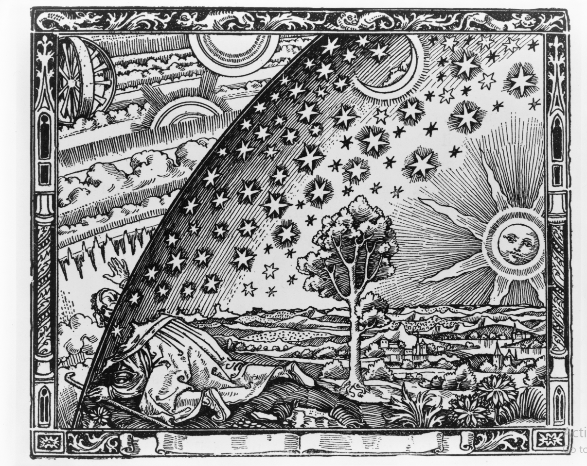

Books on the History and Philosophy of Mathematics
In this section, I present the books on Mathematics that I have enjoyed the most and that I want to share as much as possible. For each of them, I give a precise review with some informations that would probably be useful for anyone who wants to read any of them. Some of them may be about the History of Mathematics and others about Mathematics in general. Again, this is not a list of the books that I read but the list of books that are worth sharing with others in my opinion. I will probably add more books to this section in the next months.
Click on the links below for more informations about a specific book:
- Journey Through Genius by William Dunham
- Euler: The Master of Us All by William Dunham
- The Calculus Gallery by William Dunham
- From Fermat to Minkowski by Scharlau & Opolka
Textbooks in Mathematics
The following books are textbooks that I really enjoyed reading. For each of them, I give a precise review with some informations that would probably be useful for anyone who wants to learn more about a specific subject. Each of the following helped me a lot and made me discover some wonderful theorems and concepts. I will probably add more books to this section in the next months.
Click on the links below for more informations about a specific book:
- A Transition To Advanced Mathematics by D. Smith, M. Eggen, R. Andre
- Understanding Analysis by Stephen Abbott
- Abstract Algebra by Dummit & Foote
- Measure, Integration & Real Analysis by Sheldon Axler